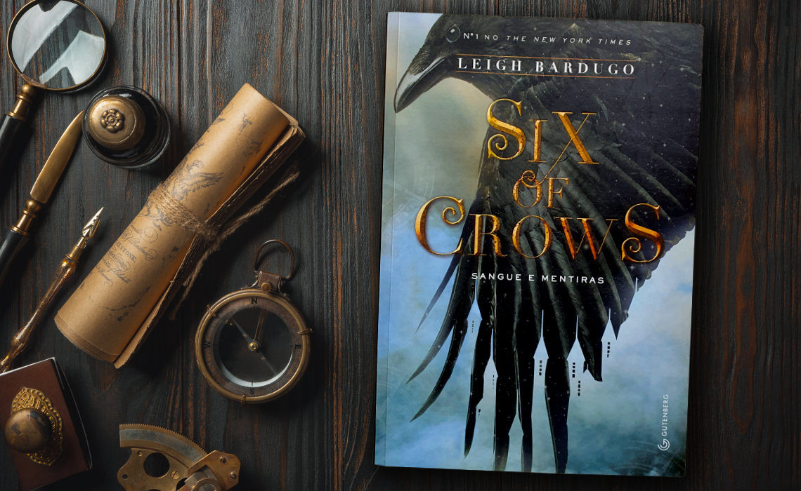
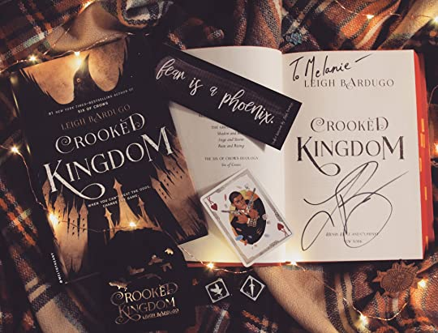

Livro 1: Six of Crows: Sangue e Mentiras
"Six of Crows" é um romance de fantasia escrito por Leigh Bardugo. A história se passa em Ketterdam, uma cidade corrupta e cheia de crime, onde um grupo de seis criminosos improváveis se une para realizar um assalto impossível. O líder do grupo é Kaz Brekker, um ladrão e mestre das artes do submundo. A missão deles é invadir a Corte de Gelo, uma fortaleza impenetrável, e resgatar um cientista que detém um segredo valioso. No entanto, eles enfrentam obstáculos perigosos e traições inesperadas ao longo do caminho. O livro mergulha nos passados complicados e nos segredos sombrios de cada membro do grupo, criando uma trama repleta de ação, suspense e reviravoltas. Com personagens cativantes e diálogos afiados, "Six of Crows" é uma aventura emocionante que prende o leitor até a última página.
Caso queira ler o livro, está disponível na versão física e em pdf
Compre o livro aqui!Livro 2: Crooked Kingdom
"Crooked Kingdom" é a continuação de "Six of Crows", também escrito por Leigh Bardugo. A história retoma o grupo de criminosos de Ketterdam, liderado por Kaz Brekker, que agora enfrenta uma traição devastadora. Com sua missão original arruinada, eles precisam lutar para se vingar e recuperar o que lhes foi tirado. Enquanto enfrentam inimigos poderosos e correm contra o tempo, Kaz e seus companheiros planejam um golpe ousado que envolve infiltrar-se no palácio do Ice Court. Com reviravoltas emocionantes, os personagens são levados ao limite, enfrentando seus medos mais profundos e segredos obscuros. "Crooked Kingdom" é um livro repleto de intriga, ação e emoção, que mergulha ainda mais nas complexidades e nos laços de amizade entre os membros do grupo. Com uma trama intricada e personagens complexos, o livro oferece uma conclusão emocionante para a série "Six of Crows".
Caso queira ler o livro, está disponível na versão física e em pdf
Compre o livro aqui!